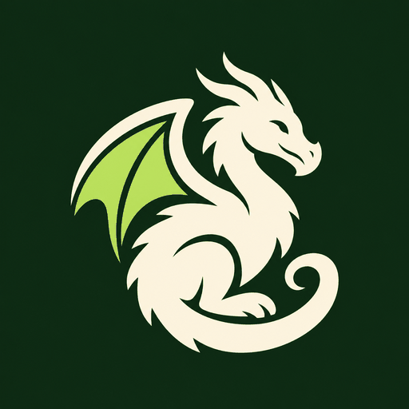

TALES FROM THE STINKY DRAGON
Your adventure starts here
Add your Patreon feed to explore every campaign and pick up wherever you leave off.

TALES FROM THE STINKY DRAGON
Add your Patreon feed to explore every campaign and pick up wherever you leave off.
EPISODES
Add your feed in Settings to start listening.
Add your feed in Settings to start listening.
YOUR LIBRARY
Choose your next adventure.
UP NEXT
Episodes follow your campaign and date order.
PICK UP A STORY
Your place is saved for each episode.
YOUR LISTENING ROOM
Open your private RSS link and save it as an XML file, then choose that file below. You can also paste the XML content.
No feed loaded.
Your episode and playback position are remembered on this device.
Imported feeds are saved on this device.
Keep the player on your home screen and open it like an app.
Android: open the browser menu and choose Install app or Add to Home screen. iPhone: use Safari’s Share menu, then Add to Home Screen.
Preparing app support…
Your saved library and the interface can open offline. Streaming audio requires an internet connection.
Your imported feed is saved in this browser on this device and restored when you reopen the app. It isn't uploaded to GitHub or synced to other devices. Audio streams directly from Patreon. Private browsing or clearing site data can remove the saved feed.